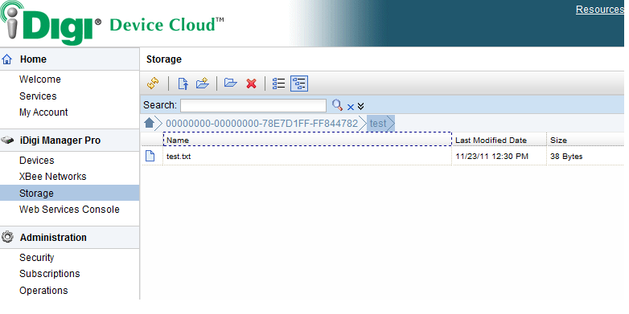

|
$projectbrief
|
$projectbrief
|
$searchbox |
Send Data Sample
OverviewThis sample demonstrates how to send data from a device to the iDigi Server. Using the data service api this application writes data to a file on the idigi server. Code FlowThe routine main() in the platform directory initializes the IIK and registers the application callback. In the file application.c is the application defined callback idigi_callback(), this routine calls idigi_data_service_callback() when a data service request is received. The routine application_run() (or application_step()) which is called after initialization calls the routine send_put_request() to initiate the data transfer to the iDigi Cloud. This routine initiates the data transfer by calling idigi_initiate_action(); once the server is ready to receive data the idigi_data_service_callback() routine is called, the callback then returns the string "Welcome to iDigi data service sample!\n" back to the iDigi Cloud. This data is copied into the callbacks buffer, the flags IDIGI_MSG_LAST_DATA and IDIGI_MSG_FIRST_DATA indicate this is the only message in this data transfer, by modifying these flags you could modify this sample to send large amounts of data back to the server. If idigi_data_service_callback() is called with idigi_data_service_type_have_data then this indicates a response from the server, idigi_data_service_type_error would indicate an error is sent back from the server. In this example send_put_request() is called once a second from application_run() (or application_step()). BuildingTo build this example for a linux based platform you can go into the directory public/run/samples/send_data and type make. If you are not running Linux you will need to setup your build system with the information described below and then build the image for your platform. FilesThe following is a list of source files required to build this sample:
PathsThe following include paths are required:
DefinesThe following defines are used in this sample:
Viewing results from iDigi Device CloudTo view the results for this sample login to the iDigi Device Cloud as described in the Getting Started section. Once logged in click on storage from within the left navigation panel as shown below. Double clicks to the device folder. 
This samples creates test.txt under test directory. Double clicks to open the test directory. 
The file is then listed as shown (below). You can click on a file to view its contents, you will see the file test.txt in the test directory after you run this sample.

Python script to retrive a file from iDigi Device Cloud storageThis sample provides a simple python script to retrive the test.txt file from developer.idigi.com after a device has put the test.txt into the server. Run the python script in the sample. python get_file.py <username> <password> <device_id> The script prints the content of test.txt. |